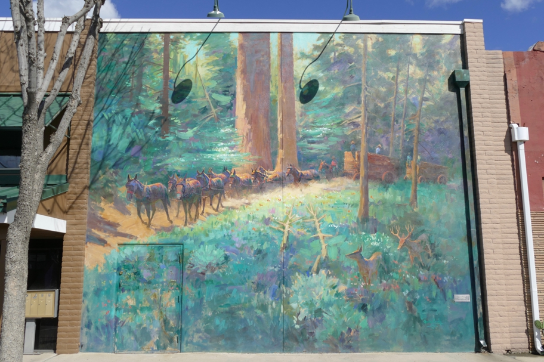

<--Previous Up Next-->

The wonderful book "Large Art in Small Places" led us to Exeter, CA, a Central Valley town packed with murals, many containing hidden images. Those in this mural are exceptionally well hidden.
California Exeter